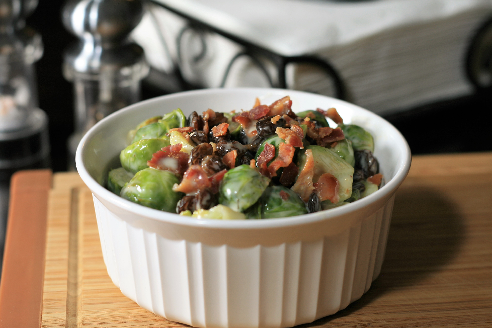

Brussels Sprouts Salad

Healthy and easy brussels sprouts salad
This Brussels sprouts salad recipe will convince anyone that they are super yummy.
Ingredient
- 3 cups Brussels sprouts, halved
- 4 slices bacon
- 1 cup raisins
- 1 cup coleslaw dressing
Steps
- Place a steamer insert into a saucepan and fill with water to just below the bottom of the steamer. Bring water to a boil. Add Brussels sprouts, cover, and steam until tender, 6 to 8 minutes. Drain and pat Brussels sprouts dry.
- Place bacon in a large skillet and cook over medium-high heat, turning occasionally, until evenly browned, about 10 minutes. Remove to a paper towel-lined plate to drain and cool.
- Add Brussels sprouts to bacon grease in the skillet. Cook and stir over medium heat until coated, about 1 minute. Remove Brussels sprouts to a paper towel-lined plate.
- Chop cooled bacon and combine with Brussels sprouts and raisins in a bowl. Pour coleslaw dressing on top and toss to combine. Refrigerate for at least 1 hour for flavors to meld.